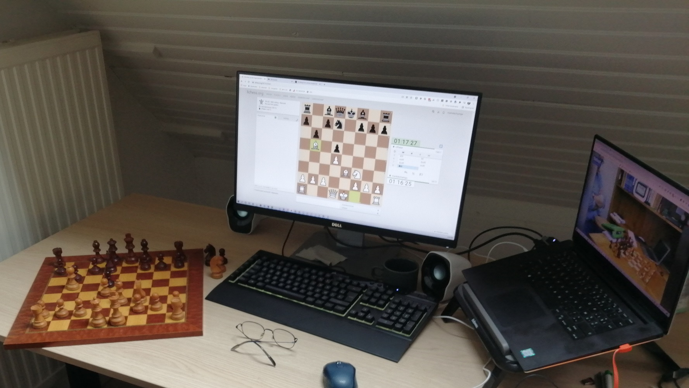

Log in op myvcc en kies de kamer dbosanalyse
Bovenaan heb je ook de link LichessTV waar je kan doorklikken naar de partijen van de spelers om deze makkelijk te kunnen volgen.
Connectez-vous à myvcc et choisissez la salle dbosanalyse
En haut, vous avez également le lien LichessTV où vous pouvez cliquer sur les jeux des joueurs pour les suivre facilement.
| # | Naam/Nom | Elo | Opmerking |
|---|